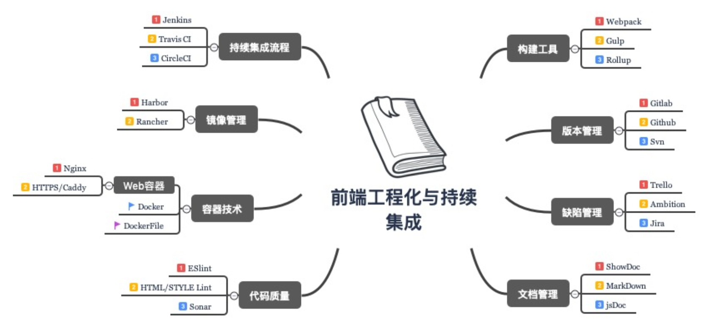
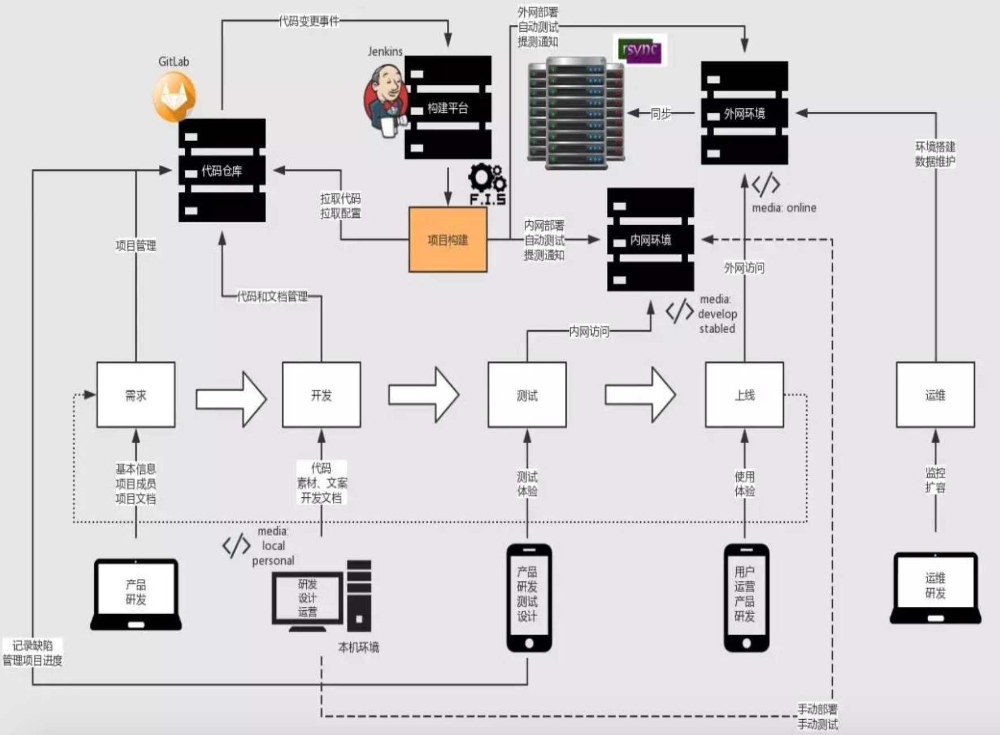
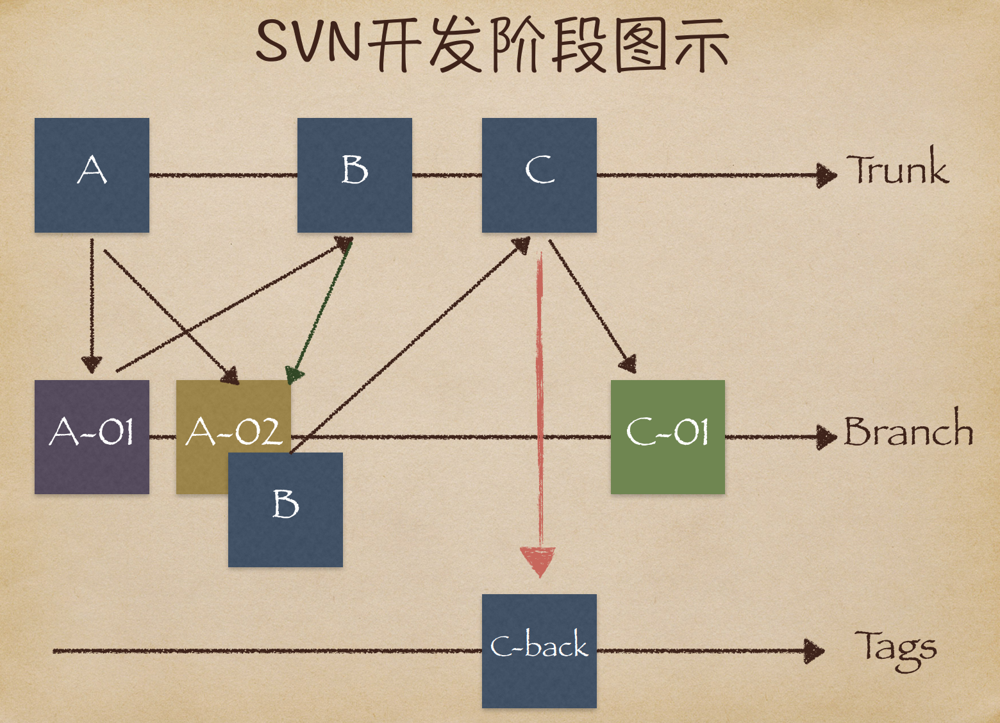
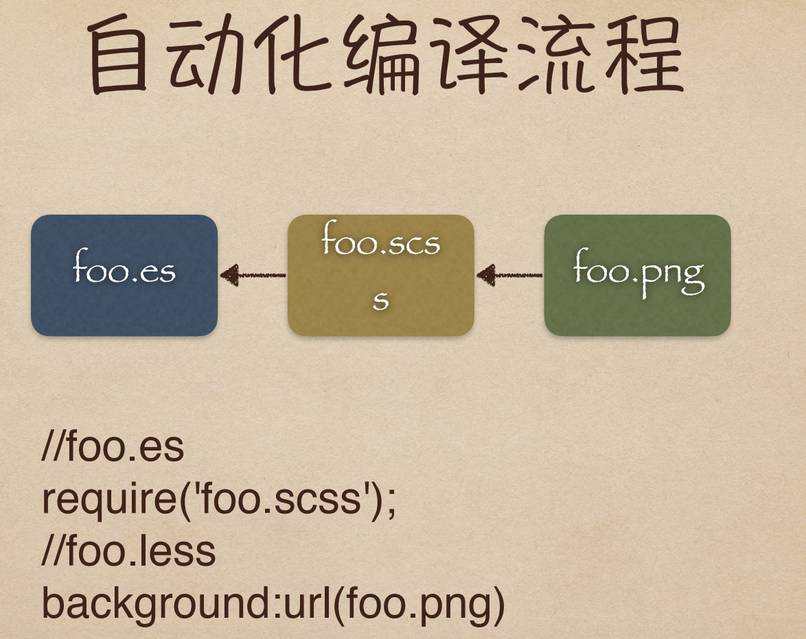
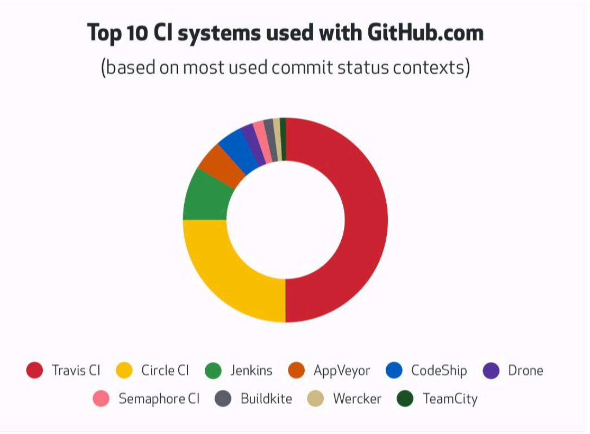

# 前端工程化
全景图 
# 代码管理
SonarQube
SonarQube 是一款用于代码质量管理的开源工具，它主要用于管理源代码的质量。官网地址 (opens new window) 使用是需要服务器上和开发机上都要安装。
linux上启动步骤
- 安装SonarQube，在服务器上和开发机上都要安装，（要求java11以上）
- rpm -qa|grep java linux上看java相关包
- rpm -e --nodeps 查出的包名 ，删除不带.noarch的包
- 去oracle官网下载 相应平台的Java SE 11版本以上
- 再从本地上传到服务器上
- 根据官网快速安装sonarqube，sonarqube (opens new window)
- 在终端 wget https://www.sonarqube.org/success-download-community-edition/ (我放在opt/目录下)
- cd sonarqube-7.9.1/
- cd bin 进入bin目录
- cd linux-x86-64/
- ./sonar.sh console 第一次启动
- SonarQube启动
配置文件 在目录 /sonarqube-7.9.1/conf/ 下 sonar.properties
- 如果是mysql的数据库，最好在服务器上装PostgreSQL，因为SonarQube默认不带mysql
开发机上安装SonarQube 步骤
- 下载地址 (opens new window)
- 根据官网改配置就可以
# 持续集成
# 什么是持续集成（Continuous integration）
在持续集成环境中，开发人员将会频繁的提交 代码到主干。这些新提交在最终合并到主线之 前，都需要通过编译和自动化测试流进行验 证。这样做是基于之前持续集成过程中很重视 自动化测试验证结果，以保障所有的提交在合 并主干之后的质量问题，对可能出现的一些问 题进行预警。
持续交付（CONTINUOUSDELIVERY）
- 持续交付就是讲我们的应用发布出去的过程。这个过程 可以确保我们尽可能快的实现交付。这就意味着除了自 动化测试，我们还需要有自动化的发布流，以及通过一 个按键就可以随时随地实现应用的部署上线。
- 通过持续交付，您可以决定每天，每周，每两周发布一 次，这完全可以根据自己的业务进行设置。
- 但是，如果您真的希望体验持续交付的优势，就需要先 进行小批量发布，尽快部署到生产线，以便在出现问题 时方便进行故障排除。
持续部署（CONTINUOUSDEPLOYMENT）
- 如果我们想更加深入一步的话，就是持续部署了。通过这 个方式，任何修改通过了所有已有的工作流就会直接和客 户见面。没有人为干预（没有一键部署按钮），只有当一 个修改在工作流中构建失败才能阻止它部署到产品线。
- 持续部署是一个很优秀的方式，可以加速与客户的反馈循 环，但是会给团队带来压力，因为不再有“发布日”了。开 发人员可以专注于构建软件，他们看到他们的修改在他们 完成工作后几分钟就上线了。基本上，当开发人员在主分 支中合并一个提交时，这个分支将被构建、测试，如果一 切顺利，则部署到生产环境中。
流程图 
- 1.统一代码仓库通过分支管理合并主干SVN。
- 2.自动化构建工具，编译、部署、测试、监控、本机 开发上线环境。 FIS3/Webpack/jdists/package.json/ chai/supertest/mocha/selenium-webdriver
- 3.持续集成平台。 Jenkins、Travis CI
- 4.部署工具。 rsync、shelljs、yargs
- 5.运营同学有权限操作运营页面保存即可上线。
# 什么是统一代码仓库
svn

合成步骤
- 1.svn checkout svn地址 --username 用户名
- 2.svn branch 分支名（add/commit）。
- 3.svn merge 主干svn地址 分支svn地址。
- 4.Beyond Compare -> svn resolved。
- 5.svn copy 主干SVN地址 /tags/2017
# 什么是前端工程化
前端工程化目标
- 自动化编译。
- 前端模块化。
- 定位静态资源。
- 前端开发组件化。
- 自动化部署测试配合版本库。
- 自动化性能优化（前端架构开发下）
自动化编译  自动化编译流程
- 读入foo.es的文件内容，编译成js内容
- 分析js内容，找到资源定位标记 'foo.scss'
- 对foo.scss进行编译：
- 读入foo.scss的文件内容，编译成css内容
- 分析css内容，找到资源定位标记
url(foo.png) - 对 foo.png 进行编译：
- 读入foo.png的内容
- 图片压缩
- 返回图片内容
- 根据foo.png的最终内容计算md5戳，替换url(foo.png)为url(/static/img/foo_2af0b.png)
- 替换完毕所有资源定位标记，对css内容进行压缩
- 返回css内容
- 根据foo.css的最终内容计算md5戳，替换'foo.scss'为 '/static/scss/foo_bae39.css'
- 替换完毕所有资源定位标记，对js内容进行压缩
- 返回js内容
- 根据最终的js内容计算md5戳，得到foo.coffee的资源url为 '/static/scripts/foo_3fc20.js
前端模块化
- 1.前端模块化框架肩负着 模块管理、资源加载 两项重要的功能，这 两项功能与工具、性能、业务、部署等工程环节都有着非常紧密的联 系。因此，模块化框架的设计应该最高优先级考虑工程需要。
- 2.CommonJS API定义很多普通应用程序（主要指非浏览器的应用） 使用的API，从而填补了这个空白。它的终极目标是提供一个类似 Python，Ruby和Java标 准库。
- 3.根据这个规范，每个文件就是一个模块，有自己的作用域。在一个 文件里面定义的变量、函数、类，都是私有的，对其他文件不可见。
- 4.CMD和AMD都是CommonJS的一种规范的实现定义，RequireJS和 SeaJS是对应的实践。
//AMD(Asynchronous Module Definition)
define(['dep1','dep2'],function(dep1,dep2){
//内部只能使⽤用指定的模块
return function(){};
});
//CMD
define(function(require,exports,module){
//此处如果需要加载某XX模块，可以引⼊入
var xx=require(‘XX’);
});
1
2
3
4
5
6
7
8
9
10
2
3
4
5
6
7
8
9
10
Webpack
- 1.Webpack执行CommonJS标准,解决了依赖配置 和请求流量。
- 2.对于Webpack来讲万物都可以是模块，所有的 文件都被合并到JS中，最终在浏览器。
- 3.兼容AMD与CMD。
- 4.JS模块化不仅仅为了提高代码复用性，更是为 了让资源文件更合理地进行缓存。
静态资源定位
- 1.配置超长时间的本地缓存 — 节省带宽，提高 性能
- 2.采用内容摘要作为缓存更新依据— 精确的缓 存控制
- 3.静态资源CDN部署—— 优化网络请求
- 4.更资源发布路径实现非覆盖式发布 — 平滑升级
前端开发组件化
Web Components
- 1.Custom Elements
- 2.HTML Imports
- 3.HTML Templates
- 4.Shadow DOM
//Custom Elements
class ButtonHelloElement extends HTMLButtonElement {
constructor() {
super()
this.addEventListener('click', () => {
alert('hello world')
})
}
}
customElements.define('button-hello', ButtonHelloElement, { extends: 'button' })
<button is="button-hello">hello world</button>
//HTML Imports
<link rel="import" href=“/components/header.html">
const link = document.querySelector('link[rel=import]')
const header = link.import;
const pulse = header.querySelector(‘div.logo');
//获取 import 的 HTML 的 document
const d = document.currentScript.ownerDocument
//HTML Templates
<template id="template"><p>Smile!</p></template>
<script>
let num = 3;
const fragment =
document.getElementById('template').content.cloneNode(true);
while (num-- > 1) {
fragment.firstChild.before(fragment.firstChild.cloneNode(true));
fragment.firstChild.textContent += fragment.lastChild.textContent;
}
document.body.appendChild(fragment);
</script>
//Shadow DOM
const div = document.getElementById('id')
const shadowRoot = div.createShadowRoot()
const span = document.createElement('span')
span.textContent = 'hello world'
shadowRoot.appendChild(span)
1
2
3
4
5
6
7
8
9
10
11
12
13
14
15
16
17
18
19
20
21
22
23
24
25
26
27
28
29
30
31
32
33
34
35
36
37
38
39
2
3
4
5
6
7
8
9
10
11
12
13
14
15
16
17
18
19
20
21
22
23
24
25
26
27
28
29
30
31
32
33
34
35
36
37
38
39
# 什么是自动化部署
自动化部署 
发布包
- 1.添加用户: npm adduser
- 2.登录用户: npm login
- 3.升级补丁版本号:npm version patch
- 4.升级小版本号:npm version minor
- 5.升级大版本号:npm version major
- 6.发布版本:npm publish
# 更多的自动化
- 1.自动化运营平台
- 2.自动化雪碧图
- 3.自动化离线打包
- 4.自动化控制缓存级别
- 5.自动化处理Inline
- 6.自动化根据网速分发版本资源
- 7.自动化运维平台